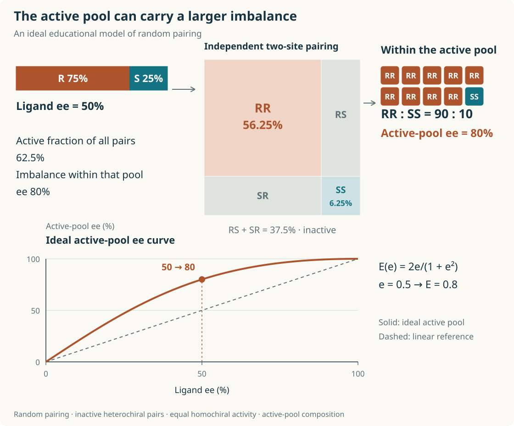
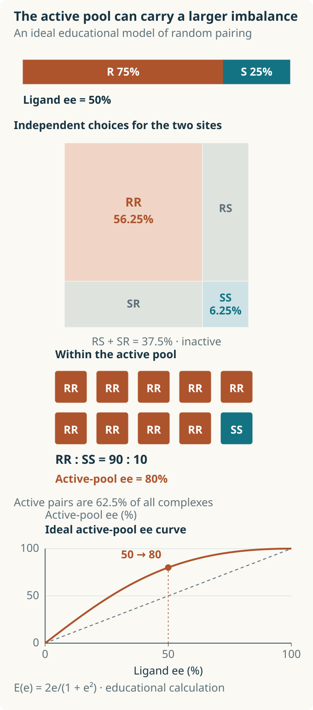
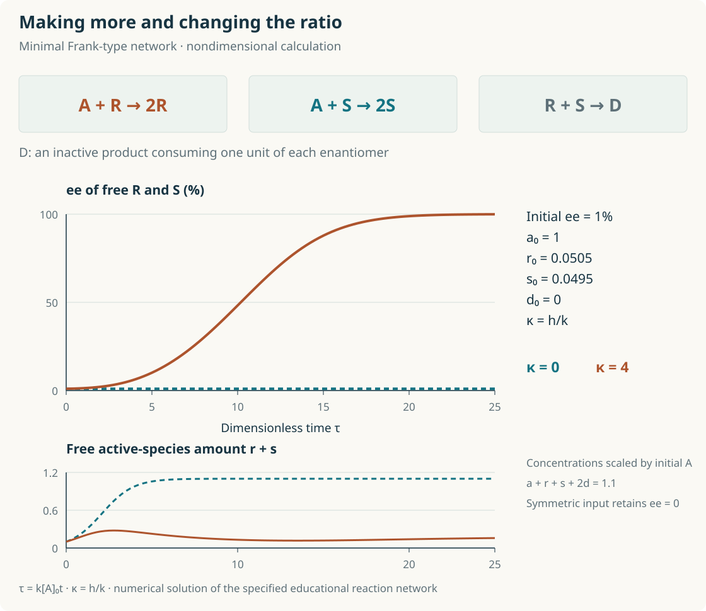
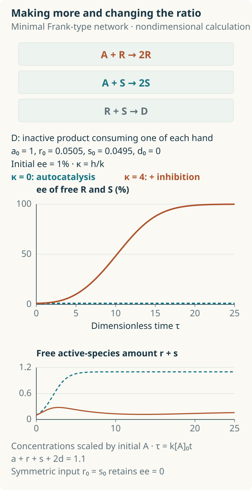
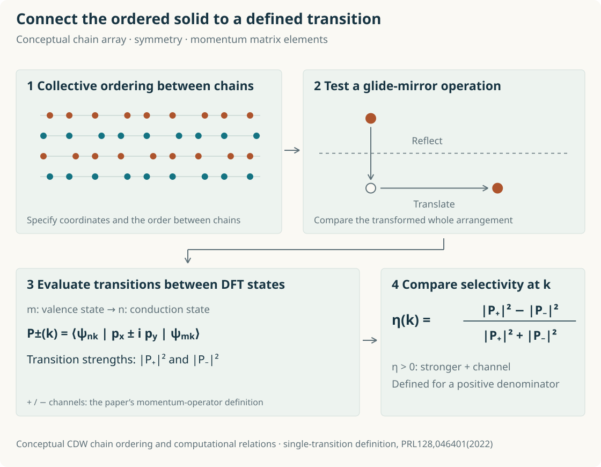
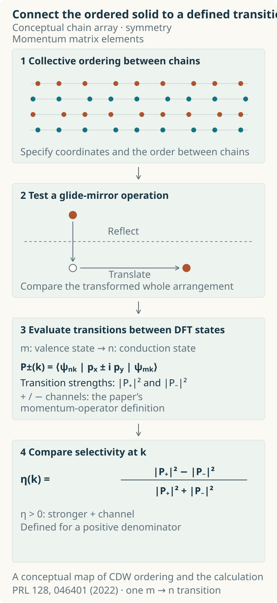

How Chemistry Amplifies a Small Enantiomeric Imbalance
From the nonlinear effects and asymmetric autocatalysis honoured by the 2026 Nobel Prize in Chemistry to circularly polarized optical transitions in chiral charge-density waves
Contents
- Mirror-image shapes and the proportions in a mixture
- Reading catalyst assembly from Kagan’s curve
- When the product helps make more of itself
- Preparing and checking an almost equal starting mixture
- Finding the molecular assemblies that drive the reaction
- How computation and machine learning select catalysts
- Calculating how light probes handedness in a solid
- References
Try putting a left-hand glove on your right hand, and the difference between resemblance and identity becomes clear. Molecules can differ in the same way. The same atoms, connected in the same order, can form two spatial arrangements that are mirror images yet cannot be superimposed by rotation. When they encounter something that already has a handedness, such as a protein in our bodies, the two forms can bind and react differently.
How can we make the desired form in the laboratory? When the reactants and their surroundings contain no feature that distinguishes the two enantiomers, the symmetric pathways towards them are equally probable. The situation changes if a tiny initial excess of one form can grow into an overwhelming majority during a reaction. The 2026 Nobel Prize in Chemistry was awarded to Henri B. Kagan and Kenso Soai for discovering nonlinear effects and autocatalysis in asymmetric organic synthesis. Chemistry that magnifies small differences in composition lies at the heart of the award. [1]
These discoveries opened an experimental approach to questions about how living systems came to favour a particular handedness, and changed how catalysts are designed. They also pose a question familiar to a computational condensed-matter physicist: through which interactions does a microscopic difference in symmetry become a large effect? Following this question through chemical reactions will lead us to solids, where light can probe the order formed by atomic chains.
Mirror-image shapes and the proportions in a mixture
Chirality is the geometric property of an object that cannot be superimposed on its mirror image. Such mirror-image pairs of molecules are called enantiomers. A familiar example is an atom surrounded by four different substituents; chirality can also arise from the way a whole molecule forms an axis or a helix. [2]
The labels R and S specify molecular configurations using defined priority rules. The direction in which a substance rotates the plane of polarized light is described by the sign of its optical rotation, (+) or (−), measured at a specified wavelength and under specified conditions. Assigning a molecular configuration and determining its response to light each require their own information. This distinction will also be useful when we examine circularly polarized optical transitions in a solid. [2]
To understand amplification, we first need to read the proportions in a mixture accurately. If the amounts of the R and S forms are nR and nS, the magnitude of the enantiomeric excess, or ee, is [2]

A racemic mixture containing the two forms in a 50:50 ratio has an ee of 0%. At 75:25, the difference is 50 and the ee is 50%; at 97.5:2.5, the ee is 95%. The denominator is the combined amount of the two enantiomers of the compound in question. Catalyst loading and the fraction of reactant converted to product are measured separately. Comparing ligand ee with product ee also means comparing the compositions of two different populations of compounds.
Reading catalyst assembly from Kagan’s curve
A catalyst with a handed binding environment can favour the pathway to one enantiomer. Chiral ligands bound to a metal are important components in creating that environment. What relationship should we expect, then, between ligand ee and product ee when the ligand is a mixture of its two enantiomers?
If each ligand independently passes on the same degree of selectivity, we might expect the two ee values to be proportional. In 1986, Kagan and colleagues reported nonlinear effects in asymmetric oxidation and aldolization reactions: the relationship curved away from that expectation. In a positive nonlinear effect, product ee is higher than this proportional relationship predicts at the same ligand ee; in a negative effect, it is lower than that prediction. The curve thus raises a question about how catalysts act together during a reaction. [3]
A simple pairing model illustrates one route to amplification. Suppose a mixture contains 75% R ligand and 25% S ligand, and ligands pair at random to form complexes. RR accounts for 56.25%, the mixed combinations RS and SR together for 37.5%, and SS for 6.25%. If the mixed complexes are nearly inactive while RR and SS work at the same rate, the active complexes make up 62.5% of the total. Within that active pool, RR:SS is 90:10. The original ligand ee of 50% has become an ee of 80% within the active pool.
Assembly and the reactivity of each combination change the proportions. When equal numbers of the two forms enter inactive mixed complexes, the relative imbalance among the remaining active complexes grows. In the ideal case where RR produces one product enantiomer exclusively and SS the other, the active-pool ratio is passed on to the product. Predicting the actual product ee requires knowing each catalyst’s selectivity, turnover rate and assembly equilibria.


How large can this amplification be experimentally? In 1989, Kitamura, Okada, Suga and Noyori studied the addition of diethylzinc to benzaldehyde using 8 mol% of the chiral amino alcohol DAIB. With DAIB at 15% ee, the (S)-1-phenyl-1-propanol obtained after hydrolysis had an ee of 95%. A ligand mixture of 57.5:42.5 thus yielded a product ratio of 97.5:2.5. Kinetic, structural and spectroscopic evidence from the reaction supported an explanation based on differences in the stability and reactivity of homochiral and heterochiral zinc complexes. [4]
When the product helps make more of itself
In the preceding example, an externally supplied chiral component selected the product. If a catalyst derived from the product helps make more of that same product, the reaction feeds its own outcome back into the process. This is autocatalysis. In asymmetric autocatalysis, a product of one handedness preferentially helps generate more of the same enantiomer, allowing a small initial difference to influence subsequent reaction steps.
In 1953, the physicist Frederick Charles Frank approached this problem through rate equations for competing, symmetric self-replication pathways. His idea combined self-promotion with mutual inhibition: growth of one form helps that form grow further, while the two opposing forms inhibit one another. Together, these processes can make a nearly balanced composition unstable. [5]
In the Frank-type teaching model in Fig. 2, R and S each promote their own formation from a feedstock A, and R and S together form an inactive species D. With equal rate constants for the two autocatalytic pathways and no mutual inhibition, both populations grow while preserving their initial ratio. Adding mutual inhibition removes equal numbers from the two populations, allowing the relative advantage of the initially more abundant form to grow. Deterministic equations with exactly equal initial populations preserve the symmetry, so the figure starts with a small excess of R.


In 1995, Soai, Shibata, Morioka and Choji reported asymmetric autocatalysis together with amplification of ee in a pyrimidyl alkanol system. An organozinc catalyst derived from the alcohol promotes the addition of diisopropylzinc to a pyrimidine aldehyde, producing more of the same alcohol. This established an experimental feedback loop in which a small bias in the alcohol initially added led to a larger bias in the subsequent product. [6]
Preparing and checking an almost equal starting mixture
In 2003, Sato, Urabe, Ishiguro, Shibata and Soai pushed the starting imbalance to an extremely small value. In a 2-alkynyl-5-pyrimidyl alkanol system, an initial ee of approximately 0.00005% rose to more than 99.5% after three consecutive reaction cycles. In terms of composition, the starting ratio was 50.000025:49.999975; by the end, the more abundant form accounted for more than 99.75%. The result showed how small a difference between enantiomers a reaction could amplify. [7]
How such a small initial value was handled is as interesting as the large final one. An ee this low is difficult to distinguish directly using conventional chiral high-performance liquid chromatography (HPLC) or polarimetry. The researchers prepared the tiny initial bias by quantitatively mixing a standard solution of high-ee alcohol into racemic alcohol. They also compared initial catalysts of opposite handedness and the corresponding products, examining whether the direction of the imposed bias was linked to the amplified result. Establishing a small number required a preparation method and control experiments capable of supporting it. [7]
The question of biological homochirality becomes more concrete here. Ribosomes select L forms of chiral amino acids when assembling proteins; how might an earlier chemical system have preserved and amplified a tiny bias? The Soai reaction realizes amplification in an experimental system using organozinc reagents and particular aldehydes. Applying the principle to early-Earth chemistry requires finding reaction networks that sustain self-promotion and competition with plausible feedstocks under the relevant conditions of water, temperature and mixing. [5–7]
Finding the molecular assemblies that drive the reaction
A single autocatalytic arrow can suggest that one R molecule directly copies itself. In the Soai system, zinc-containing molecules assemble and dissociate as the reaction proceeds. To design amplification in other molecules, we need to know which aggregate binds the substrate and which intermediates lead to a new bond.
In 2020, Athavale, Simon, Houk and Denmark combined structural and kinetic studies with density functional theory (DFT) calculations to investigate autocatalysis in a pyridyl system. They explained the catalytic action using a model in which a tetrameric aggregate of units with the same handedness binds the substrate at two sites. Structural and reactivity differences from aggregates of mixed handedness also helped explain the amplification of the bias. [8]
In 2025, Möhler and colleagues used high-resolution mass spectrometry during the reaction, kinetic measurements and reaction-network simulations to investigate four pyridyl and pyrimidyl substrates. They proposed a short-lived zinc hemiacetalate, formed from an alkoxide and an aldehyde, as a key intermediate. Identifying a stable, observable structure asks a different question from identifying the species that accelerates turnover. Tracking which species appear and how they relate to reaction rates across substrates, concentrations and stages of the reaction makes it possible to compare where each explanation applies. [9]
Kagan’s curves provide a useful starting point for such investigations. Understanding why a curve bends requires measuring catalyst concentration, reaction progress and product ee together. Kalek and Fu studied another class of asymmetric reactions in which reaction-progress kinetics alone could produce a negative nonlinear effect. Linking the shape of a curve to molecular structure therefore requires experiments that examine kinetics and structure separately. The task is to work back from the curve in the data to the molecular assemblies doing the chemistry. [10]
How computation and machine learning select catalysts
Computational chemists locate the transition states leading to each enantiomer and compare their energies. A transition state is a high-energy configuration along a reaction pathway where new bonds form and existing bonds change. Small differences in activation free energy can strongly affect the product ratio, making the catalyst’s binding geometry and the sampling of possible arrangements important.
A 2026 study by Gallarati, Bucci, Doyle and Sigman incorporated mechanistic information of this kind into statistical predictions. For nickel-catalysed C(sp³) coupling reactions, the researchers used relatively inexpensive computational methods to generate ensembles of transition-state and intermediate structures, then extracted steric and electronic features. Multivariate linear regression models trained on these features used data from some known combinations to predict new ligands or reaction partners and identify candidates for improving cases with low selectivity. The information supplied to machine learning moved from free ligands towards structures that more closely represent actual catalyst–substrate interactions. [11]
Here, expertise enters through hypotheses about which step distinguishes the enantiomers and through the selection of structures and data that embody those hypotheses. Researchers then test whether the determining step changes for a new substrate and check predicted ligands in real reactions. Deciding what can be generalized from limited data proceeds alongside discovering how the molecules work. This is also where the approach connects with the search for active species in the Soai system.
Calculating how light probes handedness in a solid
The problem of creating molecular handedness can lead to the selection of collective order formed by atoms and electrons. In computational condensed-matter physics, my own field, one example is indium atomic chains on a silicon Si(111) surface. Their charge-density wave (CDW) is a state with periodic order in electron density and atomic displacements. The sequence in which neighbouring chains’ orders are arranged distinguishes right-handed, left-handed and achiral stackings. A 2020 collaboration examined these arrangements using scanning tunnelling microscopy (STM), symmetry analysis and DFT calculations. [12]
In a 2022 study in which I was a co-corresponding author, we calculated optical transitions in these arrangements. At a fixed point in circularly polarized light, the electric-field direction rotates with time in the plane perpendicular to propagation. Comparing the strengths with which the two senses of rotation drive electronic transitions reveals which polarization couples more strongly at a given electron momentum k. We obtained this selectivity from DFT wavefunctions and transition matrix elements, and related it to the glide-mirror symmetry retained by the stacking. Whether a reflection followed by a translation restores the original arrangement affects the transition response. [13]


VASPBERRY, used in this research, is public code for analysing the geometry and optical transitions of wavefunctions calculated by VASP. I have been its lead developer and maintainer; Sun-Woo Kim contributed the circular-dichroism calculation functionality. The same transition matrix elements also connect to Berry curvature through sums weighted by the inverse square of the energy difference. Calculating wavefunctions and evaluating optical transitions lets us go beyond structural intuition and investigate at which momenta differences in handedness appear. [13, 14]
We also proposed an experiment in which cooling under circularly polarized illumination could select a large single domain of a particular chiral stacking. Pursuing this direction requires examining the energy and transition probabilities delivered to the two arrangements, together with domain-wall motion and stability. Chemistry amplifies the proportion of one molecular enantiomer; in a solid, the aim becomes finding conditions that create and maintain collective order with the desired handedness. Between catalysts that make molecules and light that probes and controls solids, the question of which interactions can select a small difference in symmetry becomes a programme of concrete calculations and experiments. [13]
References
- [1]The Royal Swedish Academy of Sciences, The Nobel Prize in Chemistry 2026: They made chemistry choose a mirror image (2026), https://www.kva.se/en/news/the-nobel-prize-in-chemistry-2026/ (accessed 2 November 2026).
- [2]G. P. Moss, Basic terminology of stereochemistry (IUPAC Recommendations 1996), Pure Appl. Chem. 68, 2193 (1996), doi:10.1351/pac199668122193.
- [3]C. Puchot, O. Samuel, E. Dunach, S. Zhao, C. Agami, and H. B. Kagan, Nonlinear effects in asymmetric synthesis. Examples in asymmetric oxidations and aldolization reactions, J. Am. Chem. Soc. 108, 2353 (1986), doi:10.1021/ja00269a036.
- [4]M. Kitamura, S. Okada, S. Suga, and R. Noyori, Enantioselective addition of dialkylzincs to aldehydes promoted by chiral amino alcohols. Mechanism and nonlinear effect, J. Am. Chem. Soc. 111, 4028 (1989), doi:10.1021/ja00193a040.
- [5]F. C. Frank, On spontaneous asymmetric synthesis, Biochim. Biophys. Acta 11, 459 (1953), doi:10.1016/0006-3002(53)90082-1.
- [6]K. Soai, T. Shibata, H. Morioka, and K. Choji, Asymmetric autocatalysis and amplification of enantiomeric excess of a chiral molecule, Nature 378, 767 (1995), doi:10.1038/378767a0.
- [7]I. Sato, H. Urabe, S. Ishiguro, T. Shibata, and K. Soai, Amplification of chirality from extremely low to greater than 99.5% ee by asymmetric autocatalysis, Angew. Chem. Int. Ed. 42, 315 (2003), doi:10.1002/anie.200390105.
- [8]S. V. Athavale, A. Simon, K. N. Houk, and S. E. Denmark, Demystifying the asymmetry-amplifying, autocatalytic behaviour of the Soai reaction through structural, mechanistic and computational studies, Nat. Chem. 12, 412 (2020), doi:10.1038/s41557-020-0421-8.
- [9]P. Möhler, G. Betzenbichler, L. Huber, A. F. Siegle, and O. Trapp, Mechanistic analysis and kinetic profiling of Soai’s asymmetric autocatalysis for pyridyl and pyrimidyl substrates, Nat. Commun. 16, 7303 (2025), doi:10.1038/s41467-025-62591-3.
- [10]M. Kalek and G. C. Fu, Caution in the use of nonlinear effects as a mechanistic tool for catalytic enantioconvergent reactions: Intrinsic negative nonlinear effects in the absence of higher-order species, J. Am. Chem. Soc. 139, 4225 (2017), doi:10.1021/jacs.7b01826.
- [11]S. Gallarati, E. M. Bucci, A. G. Doyle, and M. S. Sigman, Transferable enantioselectivity models from sparse data, Nature 651, 637 (2026), doi:10.1038/s41586-026-10239-7.
- [12]S.-W. Kim, H.-J. Kim, S. Cheon, and T.-H. Kim, Two-dimensional chiral stacking orders in quasi-one-dimensional charge density waves, Phys. Rev. B 102, 121408(R) (2020), doi:10.1103/PhysRevB.102.121408.
- [13]S.-W. Kim, H.-J. Kim, S. Cheon, and T.-H. Kim, Circular dichroism of emergent chiral stacking orders in quasi-one-dimensional charge density waves, Phys. Rev. Lett. 128, 046401 (2022), doi:10.1103/PhysRevLett.128.046401.
- [14]H.-J. Kim, VASPBERRY, version 1.6.6 (2026), commit 60efa4cf1eaca1e9d34450ce527017f57973569d (accessed 2 November 2026).